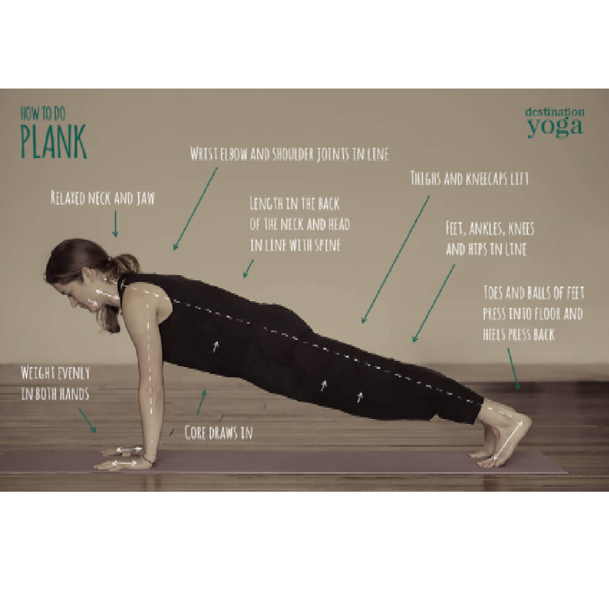
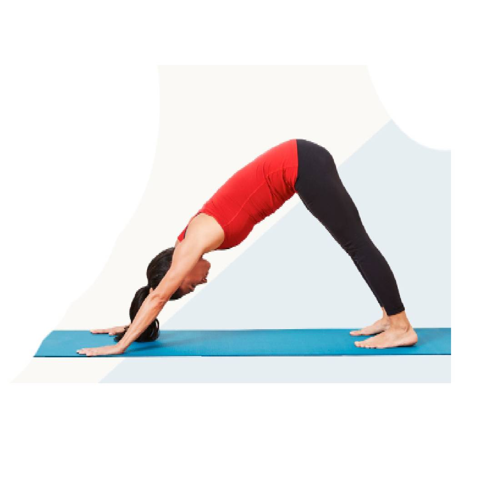
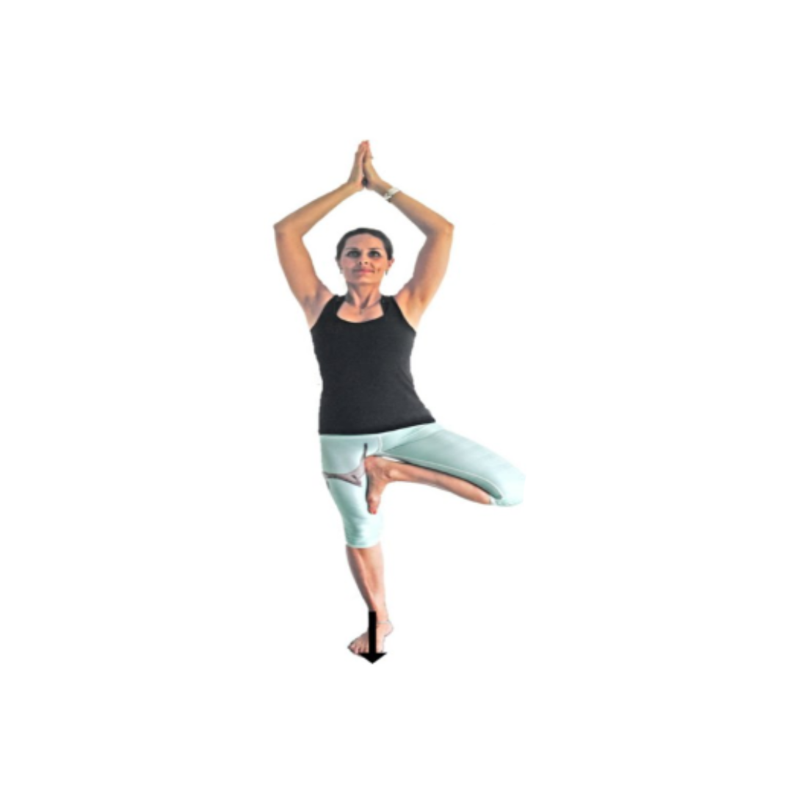

Osteoporosis
Tips to prevent falling If you have osteoporosis or osteopenia, a simple
fall can cause a broken bone. This can mean not only a trip to the
hospital but also possibly being bedridden for a long period of
time,especially in the case of a hip fracture. Strive to prevent falls,
starting with these tips:
Exercise to improve your strength and balance.
Stand up slowly and use a cane or walker if that helps you feel
steadier.
Install night lights and grab bars in your bathroom.
Be extra careful using stairs during inclement weather.
Learn more about changes you can make in your home to prevent falls.
Yogasanas

High Plank Pose
- How to do high plank pose
- Start in tabletop position.
-
Press heels back behind you as you lift hips and straighten
knees.
- Elongate spine and activate arm, core, and leg muscles.
- Draw shoulders back as you broaden across your chest.
- Hold for up to 1 minute.
- Repeat 1 to 3 times

Downward Facing Dog
- How to do downward-facing dog pose
-
Begin in tabletop position with toes tucked under feet, heels
raised.
-
Press into hands as you lengthen your spine and raise sitting
bones toward the
- ceiling.
- Elongate spine and maintain a slight bend in knees.
-
Position ears to be in line with upper arms, or move chin
towards chest.
- Hold for up to 1 minute.
- Repeat 1 to 3 times.

Tree Pose
- How to do tree pose
- Start standing on both feet.
-
Now slowly raise right foot from the floor, placing the sole of
your right foot on the inside of
- ankle, lower leg, or thigh. (Don’t press foot into knee.)
-
Extend arms overhead or press palms together in front of chest.
-
Focus your gaze on the floor or a fixed point straight ahead.
- Hold pose for up to 1 minute.
- Repeat on the opposite side.